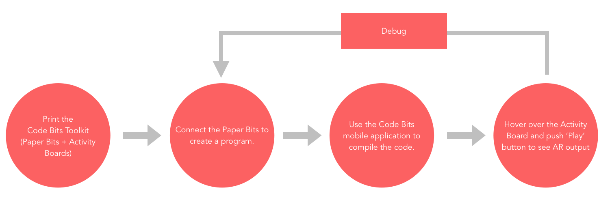

Tangible Interfaces, Augmented Reality, Computational Thinking
In the past few years, there has been a lot of research done on the tangible computational thinking toolkits for the K-12 education, due to the fact that computation thinking has been identified as one of the critical skills that needs to be a part of regular K-12 curriculum. However, most of the tangible computational thinking toolkits that are being developed are quite expensive and require higher financial aids to be deployed in real world classrooms in the developing countries.
We have developed Code Bits, which is a paper based tangible computational thinking toolkit that is inexpensive and can be used by students to engage in activities that aim in improvising their computational thinking skills. The students create programs using the tangible paper bits on any flat surface and use the Code Bits mobile application to process the code. Code Bits, mobile application can run on any android device with a camera and makes use of augmented reality based games and activities to improve the computational thinking skills of K-12 students. The entire toolkit can be used by multiple students collaboratively to engage in such activities.
Code Bits is an inexpensive tangible computational toolkit that works alongside the Code Bits mobile application that can run on any camera based android device.

FIGURE 1: System Overview
FIGURE 2: Complete step by step working of the toolkit.
All the subcomponents of the toolkits have been explained in detail below:
1. Paper Bits: The toolkit that we have designed makes use of paper blocks called as Paper Bits as tangible objects that kids connect to create sequence of programs. Each of the paper bit represents a particular command or a function that is represented visually on the paper bits. The paper bits make use of colourful and easy to understand visualisation of commands. These bits can be connected to each other on any flat surface to create the programs and can promote easy collaboration to solve problems amongst peers.
FIGURE 3: Paper Bits as showsn in the figure are connected to create programs.
2. Activity Boards: Each activity board has a different set of activity or problem that kids are supposed to solve using the Paper Bits. Different activity boards can act like different levels which teach computational thinking skills depending upon the different standards.
FIGURE 4: Activity Board depicting the level 1, in which the task is to help turtle reach the tomatoes
3. CodeBits Mobile Application: Once the user has connected the paper bits to form the sequence of command to write a program corresponding a particular activity board, he/she can then use the Code Bits mobile application to input and process the code(Figure 4). Each of the individual paper bit is associated with a particular command, and when the user hovers the mobile over a particular paper bit, an augmented button corresponding to the paper bit appears, and it needs to be pressed to input that particular command. While pressing the augmented button on the mobile screen the user gets a vibration feedback for confirmation that the button has ben pressed correctly. Each individual paper bit can be fed into the mobile application sequentially to enter the program. Once the user has fed the complete program/ a part of program, he can hover the mobile application over the corresponding activity board for which the program has been written to see the output. The activity board acts as a tracker, and when the user hovers over it, an augmented reality version of the corresponding activity board is displayed on the mobile application and when the user press the ‘ play’ button on the mobile phone, the output is shown in realtime as an augmented reality based display.
FIGURE 5: Code Bits mobile application being used to scan program and view output as augmented reality based display on mobile screen.
The entire system is scalable and can be customised easily for students of multiple age groups for collaborative game play in a classroom setting at a very low cost.
For development purpose of the entire toolkit, we have made use of Unity 3d integrated along with Qualcomm Vuforia SDK and Android SDK. The Vuforia SDK allows easy implementation of augmented reality frame work on android devices. Vuforia SDK has a set of 512 distinct frame markers that can act as markers for recognition and we have used that to create the paper bits.
Thus each paper bit corresponding to a particular command is placed inside a frame marker with a distinct id which makes the recognition quite easy. Once the a particular frame marker is identified by the Code Bits mobile application it generates a a button corresponding to that particular command and when the user presses the button, the value gets stored in the application.
Similarly, the complete program can be written by scanning each connected paper bit sequentially to complete the program or a part of the program. Each of the activity board is already fed into the mobile application as a image marker that can be easily created using the Vuforia SDK. Thus each activity board can be separately recognised by the mobile application. Thus when the user hovers over a particular activity board using the Code Bits mobile application, once can see the activity board converted into a augmented display on the mobile screen displaying the same problem or activity on it. Also, alongside the AR display there is ‘Play’ button which can be used to run the code that was inputted previously by the user. On doing so the turtle will move as it has been instructed to do so via the code. If there is some error in the code, the user can reset the code and then start off once again with the same process until he completes the task. Since the task that have been designed are very small, it would not take a lot of time in inputting the entire code once again while debugging. We are still working to make this process less tedious while we work upon the next version of prototype.
The technical implementation has been described in detail in the figure
Currently we are in the process of building a more robust version of the current prototype and also working towards designing experiments that xan be tested with real users to gain feedback and improve upon our product. Stay tuned for more updates.
Designed and Developed with by Rohan Vijay